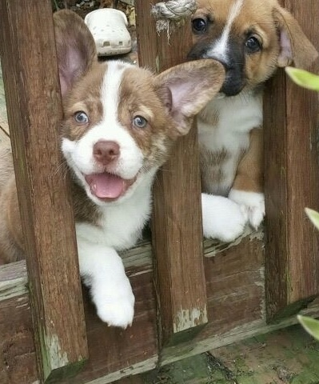
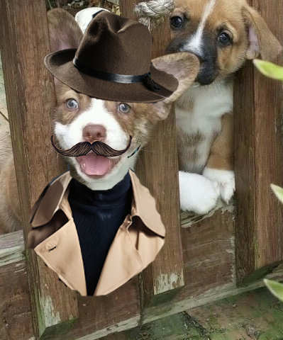

Owning a Corgi mix is not for the faint of heart. Who could have known that beneath that sweet wrapper was a combination of stubbornness, obsession, loving and a lifetime of snuggles that would inspire me to design a webpage around.
I've heard a Corgi mix described as another dog breed going undercover as a Corgi ... and I love that! Using that definition, my dog is a French bulldog going undercover as a Corgi. He's just missing a fedora, trench coat and maybe a mustache.;